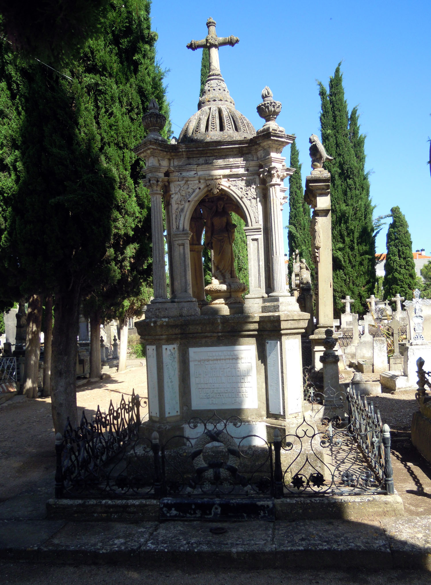
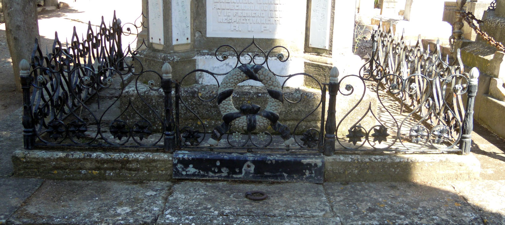
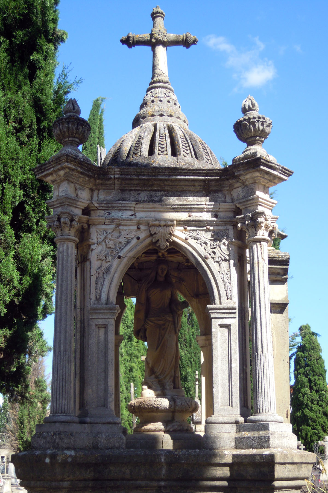
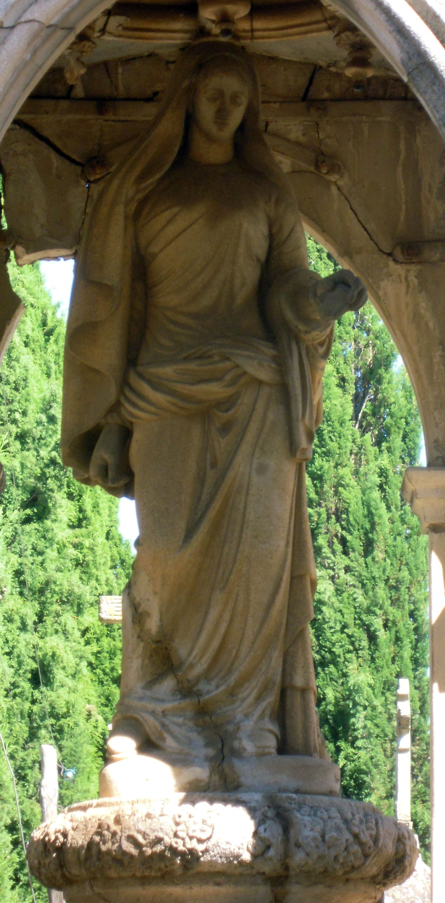

El panteón de Santiago y Pelayo Díaz (P022) es uno de los más bellos del camposanto calagurritano y llama la atención especialmente por su estructura. Fue erigido en mayo de 1892 para acoger los restos de don Rafael Díaz, fundador de la primera fábrica de conservas de Calahorra (“La Universal”, fundada en 1854) y propietario de la plaza de toros de la calle Mártires, inaugurada en 1880 y destruida en un incendio en 1914. Sus hijos formaron parte de lo más granado de la burguesía calagurritana. Don Pelayo Díaz y Gil fue, además de uno de los mayores propietarios y fabricante de conservas, Diputado Provincial (1909), Vicepresidente de la Diputación Provincial (1915) y gerente de la banca “Herreros y Riva” de Logroño. Estaba avecindado en la calle Mártires nº 22 hasta la construcción en 1916 del edificio de la calle Mártires nº 8. Casó con Purificación Labarga y fue padre de María Luisa y Concepción Díaz Labarga. Don Santiago Díaz y Gil fue, por supuesto, propietario y conservero, además de concejal en 1897, 1905, 1909 y 1920, alcalde en 1906-1907 y 1909-1910, director del periódico La Verdad, poeta y autor de zarzuela y Comendador de la Real Orden de Isabel La Católica por Alfonso XIII (1906). Habitaba el inmueble situado en la calle Mártires nº 11, trasladándose a Mártires nº 22 hacia 1905. Casó con Ángeles Lardies y fue padre de Rafael, Santiago, María Teresa, Ángeles y José Díaz Lardies. El 22 de mayo de 1892, los testamentarios de Rafael Díaz solicitaron el terreno de dos sepulturas para construir un panteón y el ayuntamiento acordó demarcar el terreno con rapidez y mandó realizar las obras imprescindibles con velocidad para proceder a la inhumación en el plazo reglamentario. El título de propiedad del terreno se otorgó a doña Leona Gil, viuda de Rafael Díaz, el 21 de marzo de 1893[1].

El panteón tiene una base cuadrada de piedra sobre la cripta inferior y está rodeado por una reja entre balaustres de hierro fundido con una puertecilla en la parte delantera, decorada con una corona atada mediante filacteria textil. El acceso a la cripta se efectúa por medio de una pequeña losa maciza de piedra situada en el suelo y que cuenta con una argolla. La parte monumental del panteón reproduce la estructura de un humilladero o templete abierto por sus cuatro lados y consta de dos partes. La inferior, maciza, es cuadrada, está reforzada con estribos angulares y remata en cornisa moldurada corrida. Sirve de basamento al cuerpo principal y de soporte a numerosas lápidas relativas a enterramientos, de variada cronología y estilo aunque todas ellas de mármol blanco[2]. Una de ellas contiene la inscripción \\\\\\\"PROPIEDAD DE LOS SEÑORES DON SANTIAGO Y DON PELAYO DIAZ GIL\\\\\\\".

La parte superior la constituye el propio templete. Soportan la estructura cuatro pilares angulares con columnas corintias exentas en el frente, de esbelto fuste acanalado y capitel corintio tallado con gran delicadeza. Las columnas soportan un entablamento con arquitrabe y friso liso y una potente y moldurada cornisa sobre la que se desarrolla una cúpula apuntada calada con fajas radiales decoradas con escamas. El remate es troncocónico y corona el conjunto una cruz latina de brazos cilíndricos y extremos en flameros, decorada en el centro con una roseta. Sobre las columnas se han colocado vasos gallonados con llamas. En cada frente del templete se abre un arco apuntado moldurado sobre pilastras cajeadas de orden toscano; las enjutas están decoradas con motivos vegetales y una hoja de acanto muy plástica marca la clave del arco. Al interior, el templete está cubierto por una bóveda vaída con baquetones moldurados a modo de crucería gótica con diagonales, ligaduras y combados curvos que forman un círculo. La bóveda se enriquece con una clave central vegetal y ocho más pequeñas en el círculo. Todas las claves presentan pequeños pinjantes.

En el interior del templete aparece, sobre una peana muy moldurada y decorada con motivo de sogueado en la parte inferior y una corona fúnebre atada con filacteria, una imagen femenina de bulto redondo y tamaño menor que el natural. Representa a una mujer en pie, vestida con túnica muy ceñida al cuerpo, de manga larga y cuello cerrado, cuya cabeza está cubierta por un velo. Ciñe la túnica a la altura de la cadera por medio de un paño anudado. El brazo derecho aparece paralelo al cuerpo y debió señalar el suelo con el dedo índice, perdido. Flexiona el brazo izquierdo, en cuya mano lleva un pequeño vaso o frasco. El rostro es dulce y redondeado, de facciones suaves y belleza idealizada aunque un poco inexpresiva. El tratamiento de los paños es muy bueno, tanto en la zona superior, donde se adhieren al cuerpo revelando la anatomía, como en la inferior, con pliegues poco profundos pero dinámicos, potenciados por el contraposto de la figura. La parte posterior de la figura está trabajada con minuciosidad, con paño
s muy naturalista. La figura se alza sobre una breve peana rectangular en la que puede leerse con dificultad la inscripción \\\\\\\"U. Puras\\\\\\\". Sin duda es una representación de Santa María Magdalena con el frasco de ungüento o perfume, en alusión al descubrimiento de la resurrección de Jesús por las Santas Mujeres.

Este panteón es único en Calahorra por su estructura y por su gran calidad y detallismo decorativo, así como por la reja que la circunda y su temprana cronología. El templete está directamente inspirado en el humilladero existente junto al convento del Carmen, uno de los dos con que contó la ciudad de Calahorra. Ubaldo Puras firma la imagen y alguna de las lápidas, aunque no podemos asegurar su participación en la estructura del panteón. Sin embargo, la decoración vegetal está cercana a la producción de Puras y existen similitudes con otras sepulturas de este escultor, por lo que se le puede atribuir. A pesar de ello, la fecha de erección de este sepulcro es anterior a la presencia documentada de Puras en Calahorra (1893-1899). Desconocemos el autor del proyecto, cuya traza no se ha conservado. En la actualidad su estado es muy preocupante, con piezas grapadas y sujetas con placas de metal; algunos ensamblajes están cediendo y la escultura central está rota. La sepultura se está degradando con rapidez.
[1] Archivo Municipal de Calahorra. Libro de Actas municipales. 1890-1894. Sig. 141/3. S/f, 22 de mayo de 1892 y 21 de marzo de 1893. Cod. 2.7.4.8. Leg. 1133/54. Cod. 2.1.4.13. Sig. 441/3 (padrón de 1892), fol. 20-21. Sig. 442/1 (padrón de 1897), fol. 19. Sig. 442/3 (padrón de 1901), s/f, calle Mártires nº 11 y nº 22. Sig. 443/1 (padrón de 1907), fols. 73 y 74. Sig. 444/2 (padrón de 1924-1925), fols. 73 y 76. GUTIÉRREZ ACHÚTEGUI, P. Historia de la Muy Noble, Antigua y Leal ciudad de Calahorra. Calahorra: Amigos de la Historia, 1981. P. 276. LÓPEZ RODRÍGUEZ, P. Calahorra Levítica y Liberal. Cambio socioeconómico y caciquismo liberal en La Rioja Baja 1890-1923. Calahorra: Amigos de la Historia de Calahorra, 1997. Pp. 32, 138, 147. CASTAÑEDA BRACHO, M.T.; CRISTÓBAL FERNÁNDEZ, E. “La autoridad municipal en la ciudad de Calahorra. Listado de Corregidores y Alcaldes. Siglos XIX y XX.” Kaklakorikos. Nº 12 (2007), pp. 395- 404. P. 400. La Rioja, 17 de noviembre de 1896, 22 de enero de 1898, 5 de enero de 1899, 25 de octubre de 1906, 13 y 19 de octubre de 1909, 22d e octubre de 1915. Una fotografía de Rafael Díaz puede verse en Heraldo de Aragón, 31 de agosto de 1913, p. 5.
[2] Las lápidas son muy dispares. La de C. Díaz Gil (+ 4-8-1884) está grabada en caracteres góticos. La de L. Gil y Gómez (+22-1-1900) está firmada por U. Puras y es más decorativa, con letra más elaborada y pequeñas rosetas. Las de M.C. Díaz Lardies (+23-4-1914) y T. Díaz y Gil (+11-11-1889) presentan flores sinuosas modernistas.